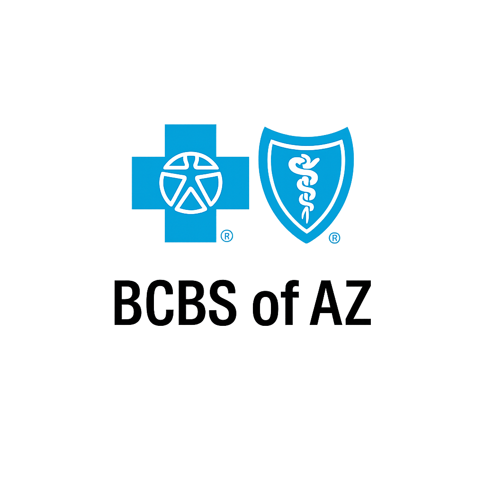
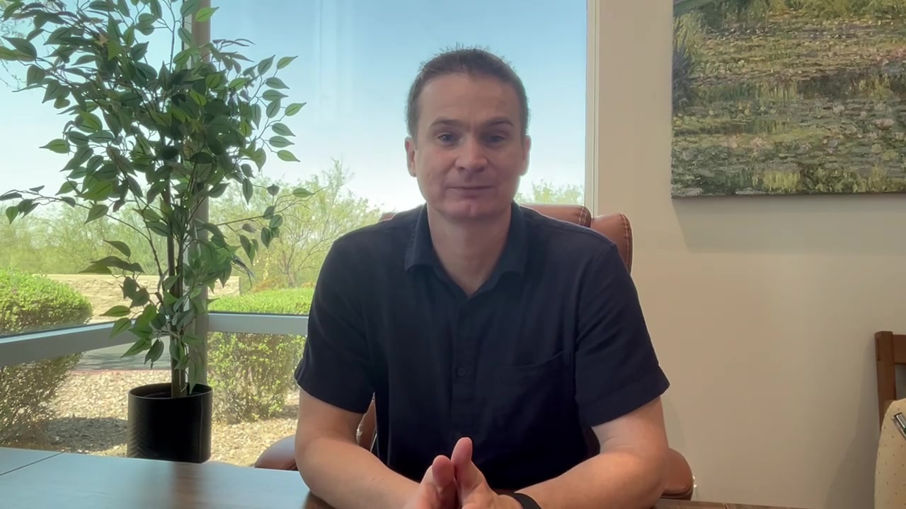

Hear
Start with your story
What you are experiencing, what has changed, and what matters most to you.
Psychiatric evaluation and medication management for adolescents and adults, built around thoughtful conversations, clear options, and appointments that do not feel rushed.
Logan Carton, PMHNP-BC
Board-certified psychiatric mental health nurse practitioner, licensed in Arizona. New patients welcome.
Treatment decisions made together.
Compassionate, personalized psychiatric care for anxiety, depression, ADHD, bipolar disorder, PTSD, grief, OCD, life transitions, and other mental health concerns.
The Anthem office serves nearby North Valley communities including North Phoenix, Desert Hills, New River, Cave Creek, and Carefree.
Explore servicesTime to ask questions, understand your options, and make treatment decisions together.
Good psychiatric care is more than choosing a medication. The process starts with listening, understanding the pattern, reviewing reasonable options, and following what changes over time.
What you are experiencing, what has changed, and what matters most to you.
Symptoms are considered alongside history, sleep, health, previous treatment, and daily functioning.
Discuss the reasoning, possible benefits, tradeoffs, alternatives, and what the next step could look like.
Follow-up focuses on response, side effects, functioning, new information, and whether the plan still fits.
Thoughtful care, clear explanations, and decisions made together.
See what starting care looks likeTreatment starts with understanding what you are experiencing, how it affects daily life, and what options fit your goals.
Persistent worry, panic, physical tension, and related symptoms.
02DepressionLow mood, loss of interest, low energy, and changes in daily functioning.
03ADHDAttention, impulsivity, organization, motivation, and executive-function concerns.
04PTSDTrauma-related symptoms, hyperarousal, avoidance, and intrusive experiences.
05OCDObsessions, compulsions, and patterns that interfere with daily life.
06Bipolar DisorderMood instability, depressive episodes, elevated mood, and related symptoms.
07Grief & LossSupport when loss becomes difficult to process or begins affecting functioning.
08Life TransitionsPsychiatric support during major changes, stress, and adjustment periods.
Coverage and benefits vary by plan. We recommend confirming behavioral health benefits with your insurer before your first visit.
Medicare and Medicaid/AHCCCS are not accepted at this time. Private-pay options are available; call for current rates.


Back to Life Mental Health is an independent psychiatric practice. Logan Carton, PMHNP-BC, works collaboratively with patients to understand symptoms in context and build a plan around the person—not a template.
Schedule online or call the office with questions before booking.